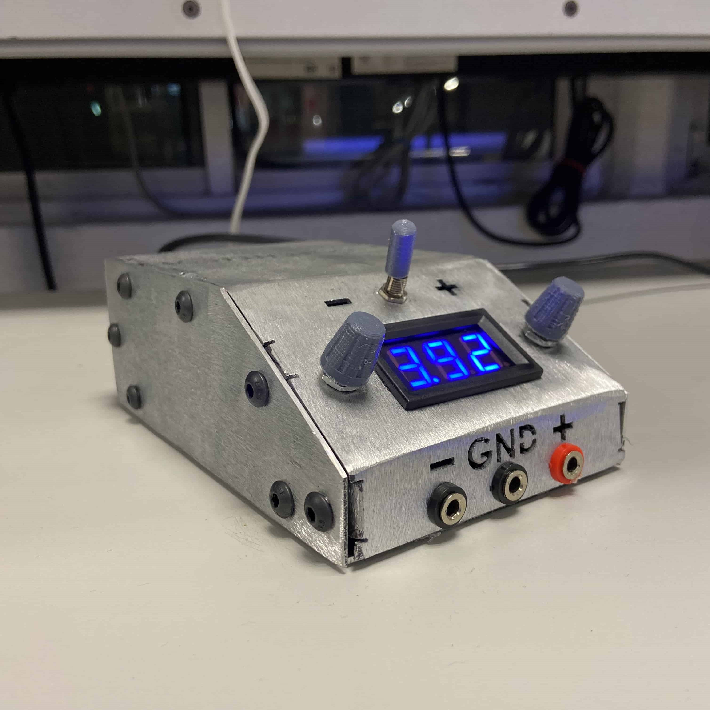

What is it about?

For my "Fundamentals of Electronics" class in the fourth semester of my Engineering in Robotics and Digital Systems degree, I created a variable power supply from -15 to +15 Volts with a folded metal casing. The goal of this project was to test my skills in creating high-quality folded sheet metal components and apply them to a real project.
The power supply features two potentiometers that allow independent regulation of positive and negative voltages. A mechanical switch enables the selection of the desired voltage, which is displayed on a 3-digit 7-segment voltmeter. It also includes banana connectors to facilitate transportation and provide flexibility in connecting the desired output terminals.
To prevent accidents, the metal enclosure is grounded. In the event that an internal component becomes desoldered, the current flows through the ground wire, reducing the risk of electrical shock when touching the device.
The manufacturing process involved cutting the enclosure using a water jet cutter and manually bending all the folds of the piece. Finally, it was sanded and polished to achieve the desired finish, and then assembled with the power supply circuit inside.